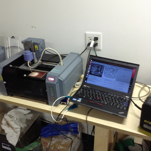

Kousuke Kikuchi
Fab Academy Participant and PhD Candidate
Week 10: Input Devices
This week's assignment summary:
Assemblying humidity and temperature sensors to calculate confort in some area,
1. Introduction
For my final project, I have wanted to make a robot which can notice us a confortable area. As I surmise from my view, the robot would use a lot of pins: temperature, humidity, output devices, also LEDs which should be needed for checking circuit. When I looked at the examples of both "fab academy" and "how to make almost anything," Attiny45 were basically used for the circuits. However, since I would like to try a main calculation of comfort, this week I continued to use Attiny44 which had been on the failed board.
Sensoring environment, smart house and smart city are the most focus point in architectural discipline. Once, I colaborated with Atsushi Enta, an Assistant Professor at The Science University of Tokyo, and Jun Nakagawa, an architect at Levi Archiecture, about sensoring and visualizing [1].
The sensored data was transmitted to Cosm (Pachube at that time), and Sketch Up Web Console sent query to Cosm server to attain data, and altered the color of area in relation to the temperature.
But I could not understand the arduino and its related circuit of an environmental sensor. Hence, this time I tried to know the skill of environmental sensoring.
2. Designing and Making own sensor node
2.1 Buying Sensors and necesities of Attiny44
I went to Akihabara to buy sensors and necesities, and bought interesting sensors:
Humidity and Temperature sensor. John Rees at Barcelona noticed me that this sensor costs around $5 in U.S. But I bought it around 1300 yen ($15). I would like to try this one this time!
Pulse sensor made by Spark Fun. Bootloader must have clock to use this sensor.
Triaxial Accelerometer. This sensor is a very powerful tool for detecting our behabior. One of the greatest example is Life Microscope by Hitachi Corperation. By analyzing the typical wave and behavior, Life Microscope can visualize the amount time of activity, such as sleeping, running.
But, for calculating discomfort index, this time would sensor the temperature and humidity based on a sensor.
2.2 Making a sensor node (until March 31
Based on previous lecture "electronics design" and data sheet of Attiny44, I re-design the LED+BUTTON board into humidity and temperature sensor node.
Designing. 4 wires shown above connects to the 4 pin sensor. I thought I would design this by using cupper wires.
milling with Fab Modules at Waseda University, different from SFC*SFC.

At soldering, failed. I tore down the wire which should be connected to the humid temperature sensor due to thin wires for 4 pins (March 31, 2013).
So, I altered the size of 4 pin wires.
At April 1, I received parts from Yuichi Hirose at Seijo Gakuen. Milling. Soldering.
broke again... (18:00 JST)
Because Attiny44 was not sold in Akihabara and the store which sells electronics parts such as Attiny45 or Resistor was closed, I decided to confirm how to use RHT03 humid temperature sensor.
3. Checking the schematics and program of RHT03 with Arduino
According to the datasheet, the RHT03 has 4 pins, VCC, a pin connected to MCU, null, GND. The pin to MCU transmits the 40 bits data, consisted of 16 bits Humidity Rate data, 16 bits Temperature data, check number. Each number was binary, hence we must calculate to decimal and devide by 10.
0000 0010 1000 1100 0000 0001 0101 1111 1110 1110
0000001010001100 / (10) -> 652/10 = 65.2 [%]
0000000101011111 / (10) -> 351/10 = 35.1[C]
Based on the schematics, I made a breadboard for this sensor. But problem is that this 40 bits data. Arduino can read integer data. However, this sensor returns binary data.
To calcualte this data, RHT library should be needed.
It worked.
4. Redesigning with Attiny45
I checked the datasheet of Attiny45 and understood only a 4.8 [kΩ] registor should be needed for Attiny45. Attiny45 has 8 pins, but only 2 pins are available if the user utilizes jumpers.
The 4-pin might be different, but I found the gap between breadboard and the sensor was same. I guessed this distance might be a standard. (April 2, 2013)
At April 3, My friend gave me Attiny85 (which is compatible with Attiny45), Resistors. Accroding to him, Attiny45 and 85 sometimes cost more than ATMega328 due to scale of economy. I milled the circuit, and soldered it. But, it does not work. According to AVRISP mkII, green light blinked. However at burning bootloader, error occurred. After fer hours of checking schematics and datasheet of Attiny, I found there was no VCC conectivity to the MCU. (April 4, 2013)
I altered the design of the circuit and milled it at April 3, 4:00 am JST. I soldered all the parts and made sure the connectivity of all parts.
I was able to burn bootloader based on AVRISP MKII. But the problem was the serial communication. UART function might not be supported on Attiny. So, I searched a library which is able to comunicate via serial port. And I found it. this file.
$ avr-gcc -mmcu=attiny44 -Wall -Os -DF_CPU=8000000 -I./ -o serial.out serial.c
$ avr-objcopy -j .text -O ihex serial.out serial.hex
$ avrdude -p attiny85 -P usb -c avrispmkii -e -U flash:w:serial.hex
avrdude: AVR device initialized and ready to accept instructions
Reading | ################################################## | 100% 0.01s
avrdude: Device signature = 0x1e930b
avrdude: erasing chip
avrdude: reading input file "serial.hex"
avrdude: input file serial.hex auto detected as Intel Hex
avrdude: writing flash (254 bytes):
Writing | ################################################## | 100% 0.09s
avrdude: 254 bytes of flash written
avrdude: verifying flash memory against serial.hex:
avrdude: load data flash data from input file serial.hex:
avrdude: input file serial.hex auto detected as Intel Hex
avrdude: input file serial.hex contains 254 bytes
avrdude: reading on-chip flash data:
Reading | ################################################## | 100% 0.07s
avrdude: verifying ...
avrdude: 254 bytes of flash verified
avrdude: safemode: Fuses OK
avrdude done. Thank you.
I checked at Arduino IDE, but there was no signal. I also tried SoftwareSerial via Arduino, but it also failed.
At electronics design, my hello.44.board was not responded. There might be some problems on my computer setting.
Sensoring my activities:
Altering the circuit design: 5 times.
Going to Akihabara: 2 times.
Milling circuit: 12 times.
Energy drink consumption: 5 cans.
Appendix: Trying pulse sensor with arduino
I have wanted to assemble a device which can transmit feeling. And tested it. I could use it very easily. According to the sketches of pulse sensor, it could detect blood flow by culculating the reflexed light emitted from LED. Since the light reflection is corelated to the blood flow, this method can detect the heart beat.
When I looked at the sample programs, Interrupt.pde was the main program which calculates the heart beat and detect the pulse. Since this sensor can detect R-R Interval, It can be used for daily purpose, not medical purpose.
References:
[1] A. Enta, K. Kikuchi and J. Nakagawa (2010.06) Fundamental research on architectural monitoring system collaborate with Arduino, Pachube and Sketchup, AIJ J. Technol. Des. Vol. 16, No.33, 791-794